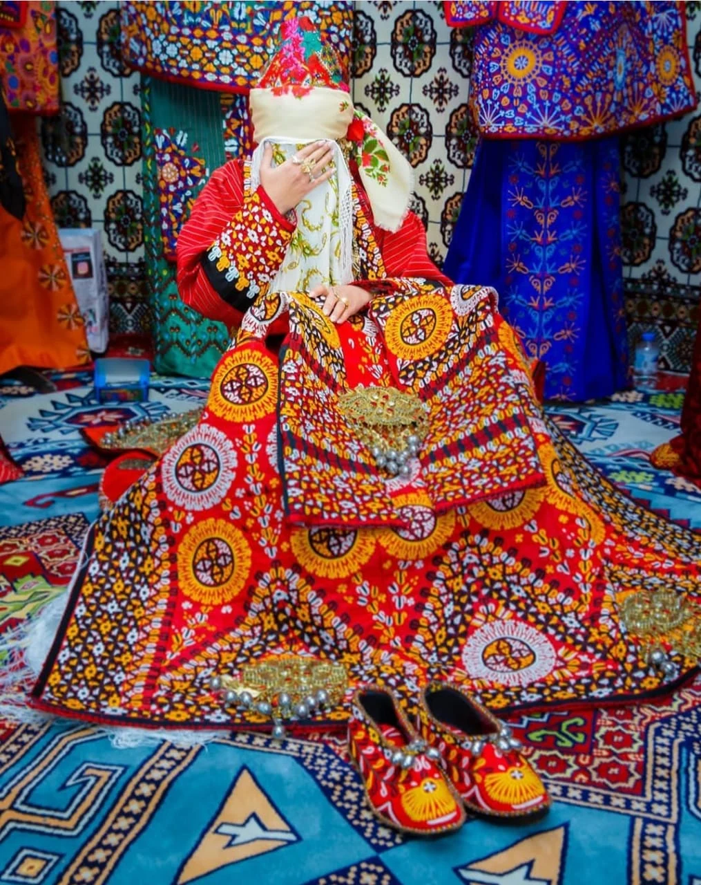
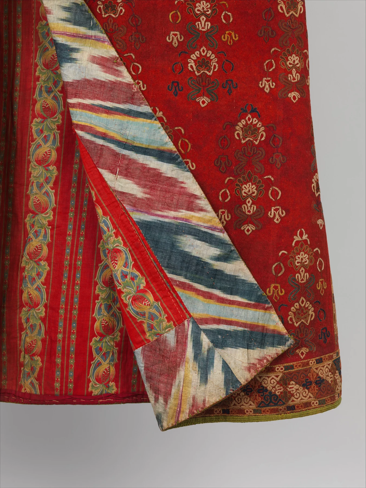

Türkmen milli lybaslarynyň arhiwi
Ýüpden
Gulzar Nurlyyeva · Wikimedia Commons ↗
CC BY-SA 4.0
Ýüpden
kümüşe.
Keteni köýneklerden kümüş şaý-seplere çenli. Asyl nusgalar bilen tanyşyň we öz lybas utgaşmaňyzy düzüň.
Lybas we zergärçilik
Milli lybas arhiwi
Milli lybasy öwren
Suratdaky belgini saýlap, lybasyň ýa-da şaý-sepiň arhiw ýazgysyny açyň.

Çogadaky keşde, The Met ↗Keşde sungaty
Asyl nusgalar
Ýakada, ýeňde we başgapda görünýän keşdeler türkmen lybasynyň möhüm bölegidir. Türkmen keşdeçilik sungaty 2022-nji ýylda UNESCO-nyň maddy däl medeni mirasynyň sanawyna girizildi.
Keşde nusgalaryna seretKeşde nusgalary
Nusgany açyp, keşdäni ýakynlaşdyryň we studiýadaky utgaşmaňyza goşuň.
Toý we dabaralar
Toý fotosuratlary we muzeý nusgalary arkaly lybaslaryň aýratyn böleklerini öwreniň.
Lybas taslamasy
Dizaýn studiýasy
Çäräni, reňki we arhiwden lybas, keşde hem-de şaý-sep nusgalaryny saýlap, öz taslama kartaňyzy düzüň.
Taslama nähili düzülýär?
Karta saýlan lybasyňyzy, keşdäňizi we şaý-sepiňizi birleşdirýär. Bu el bilen saýlamak guralydyr; AI modeli ulanylmaýar.